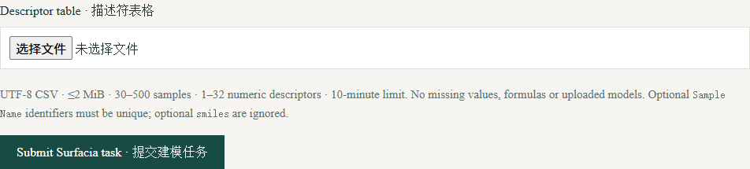

Surfacia · 在线建模指南
提交已有描述符表格，进行固定回归建模与有符号 SHAP 解释；在线流程不运行量化计算或分子表面生成。
截图来自公开教学数据或合成示例，不含用户账户、任务令牌或未公开研究数据。点击图片可放大。
1. 登录与任务状态
使用已批准的账户登录。新用户先注册并验证邮箱，管理员批准后才能提交计算。
各工具共用账户配额：同时1个运行任务、2个排队任务，每天最多提交10次；结果保留72小时，需要长期保留时请自行保存。
2. 准备描述符表格
使用 UTF-8 CSV，包含连续数值 target 列和1–32列数值描述符；30–500个样本，最多2 MiB。不允许空值、公式或模型文件。可选 Sample Name 必须唯一，smiles 列会忽略。
可先使用页面提供的36分子公开示例。其标签是计算的 Crippen logP，不是实验数据或分子表面描述符基准。

3. 提交并检查验证结果
提交后保留任务编号并等待。固定 XGBoost 使用全部描述符，350棵树、深度8、学习率0.03。相同描述符向量分在同组，20%的组被留出，建模池进行分组验证。
本工具目前通过 ZIP 提供结果。打开 README.txt 和 report.json，比较留出误差与训练均值基线，再查看 parity.png。较差或负 R² 需要讨论，不能隐藏。
4. 阅读有符号解释
shap_importance.png 展示贡献大小，shap_dependence.png 与 shap_values.csv 展示方向。正 SHAP 表示相对模型基线提高预测。
这种关联不证明干预有益或化学机制成立。网页版是固定流程，与桌面重复划分工作流不同；更完整的方法见软件介绍页链接的手册。
遇到问题
被拒绝时检查 target 列名、数值单元格、重复标识及样本数。固定建模流程不需要提供 API key。
完成运行不等于数据质量、迁移能力或因果解释已得到证实；72小时内保存需要的结果。